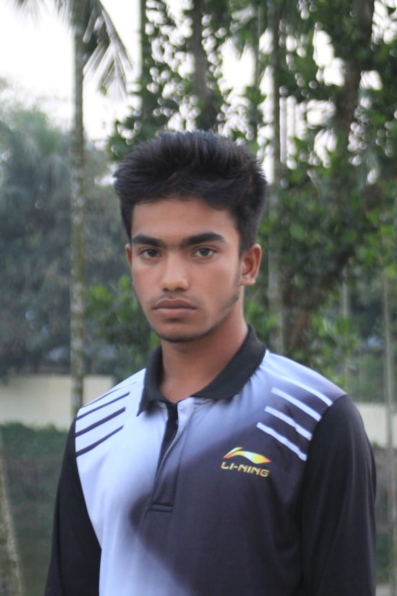
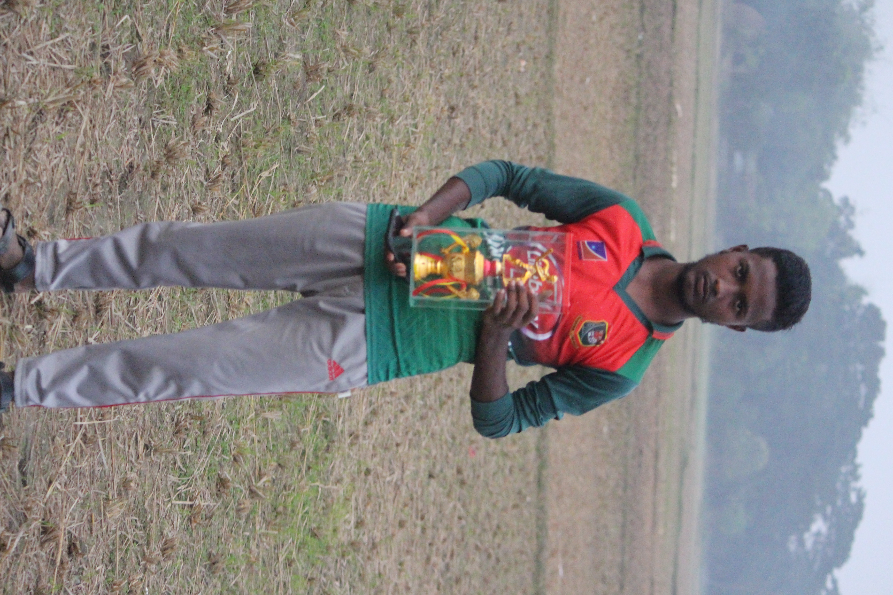
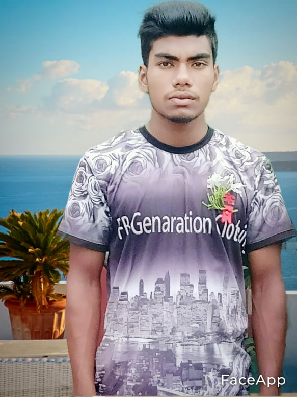
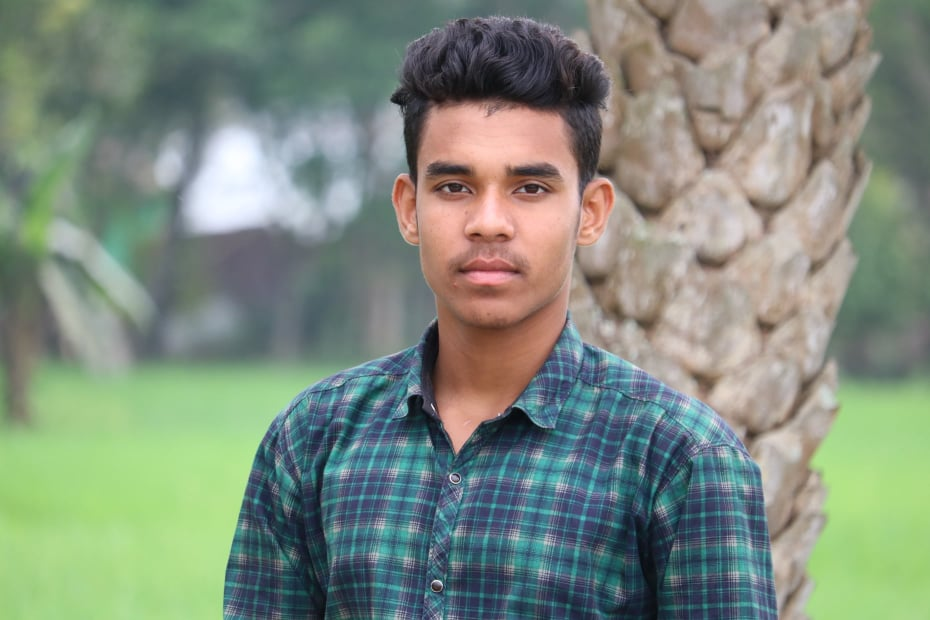
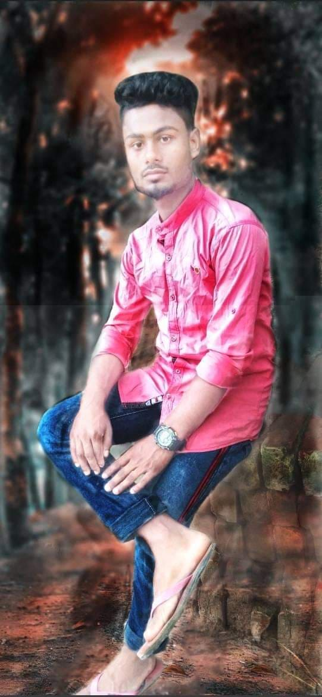

মোঃহারুন মিয়া জিনারী কানার বাড়ির কবিরের ৪র্থ সন্তান।তিনি ৬ সদশ্য বিশিষ্ট কেন্দ্রীয় কমিটির অন্যতম একজন সদশ্য।
মিনহাজ আহাম্মেদ জিনারী কানার বাড়ির মরহুম আব্দুর রশিদের ৫ম সন্তান।তিনি ৬ সদশ্য বিশিষ্ট কেন্দ্রীয় কমিটির অন্যতম একজন সদশ্য।
ওমর আলী তেতুলিয়া গ্রামের মহসীনের ছোট সন্তান।তিনি ৬ সদশ্য বিশিষ্ট কেন্দ্রীয় কমিটির অন্যতম একজন সদশ্য।
মারুফ আহম্মেদ তেতুলিয়া গ্রামের হাবিবুর রহমানের দ্বিতীয় সন্তান।তিনি ৬ সদশ্য বিশিষ্ট কেন্দ্রীয় কমিটির অন্যতম একজন সদশ্য।
আব্দুল আহাদ একজন পর-উপকারী উদার মনের মানুষ।মানুষের জন্য তিনি নিবেদিত প্রান। এই ক্লাবের জন্য মারমনিল হবি’র পরই তার আত্নত্যাগ।তিনি নিজের পরিবারের চেয়ে বেশি ক্লাবকে গুরোত্ব দেন।ব্যক্তিগত যত সমস্যাই থাকোক না কেন ক্লাবের সকল কর্ম-কান্ডে তিনি সবার আগে উপস্থিত থাকেন। একবারে নিস্বার্থ একজন মানুষ যা আজকালকার সমাজে পাওয়া যায় না। তিনি ডাকুরিয়া গ্রামের মরহুম শূক্কুর আলীর তৃতীয় সন্তান।
